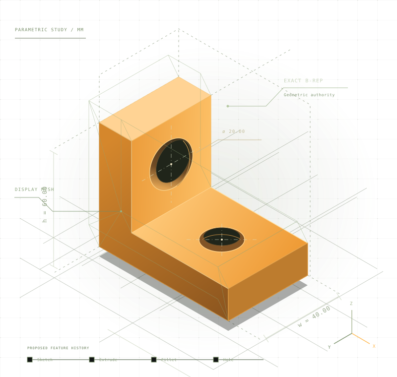

Blueprint stage / Built in the open
Precision,
with room
to build.
An open blueprint for parametric CAD inside Blender. Exact geometry, editable history, and a familiar creative workspace. Help us make it real.
Planning, architecture, and community first. No installable add-on yet.

01 / The idea
Keep the shape exact.
Keep the workflow
in Blender.
B-CAD proposes a CAD system with a clear boundary: Blender handles interaction and display; an external Open CASCADE core owns the exact model. The mesh is a view of the design. The solid remains the source of truth.
Read the architectureBlender interface
Sketch interaction, feature controls, selection, and viewport feedback.
Parametric document
Parameters, feature history, references, and deterministic recomputation.
External OCCT core
Exact B-Rep operations, model validation, and display tessellation.
Proposed architecture. Implementation decisions remain open for review.
02 / A deliberate path
Small steps.
Solid foundations.
A large vision needs testable milestones. Each phase should prove a useful slice before we widen the surface.
See the full roadmap- 00
Define the contract
Current focusAgree on architecture, document semantics, licensing, and what the first working slice must prove.
- 01
Prove the geometry loop
PlannedConnect Blender to an isolated core. Create an exact solid, display it, and recompute a parameter change.
- 02
Make design editable
PlannedBuild toward constrained sketches, feature history, persistent references, and understandable failures.
- 03+
Earn a dependable release
PlannedExpand modeling and exchange capabilities only as validation, packaging, documentation, and real workflows support them.
Milestones describe goals, not shipped features or promised release dates.
03 / Open by intention
Your kind of expertise
belongs here.
Geometry specialists, Blender developers, designers, technical writers, testers, and people who simply know where CAD gets painful. There is useful work beyond writing code.
Challenge the architecture
Review the exact-model boundary, geometry decisions, and failure cases before they become expensive.
Build the first working slice
Help turn written contracts into a small, demonstrable Blender-to-core loop.
Design, document, and test
Describe real workflows, improve the contributor experience, and make acceptance criteria concrete.
Human ideas. AI assistance. Shared standards.
AI users and AI agents are welcome. For AI-authored code and architecture, the owner's requested quality bar is GPT-6.1 Sol, Astra, Claude Opus 5.5 level, or an equivalent model. Contributions need clear evidence, accountability, and human review.
Read the AI contribution policy04 / Start in the right place
A blueprint today.
A system we build together.
B-CAD is at the planning stage. There is no downloadable add-on, supported Blender version, or production-ready workflow yet. The installation guide tracks that status and will grow with the implementation.
The next feature starts with a contribution.